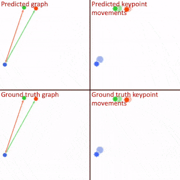
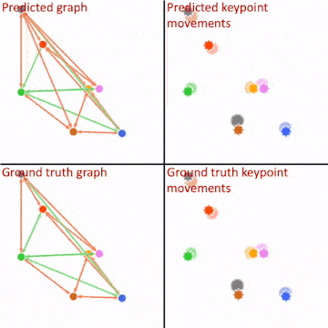

Here we show the qualitative results of the discovered graph and the predicted future from our inference and dynamics modules.
2.1 Multi-body Interaction
Example #2
(less balls than training)

Example #3
(more balls than training)

2.2 Fabric Manipulation
For the cloth environment, the keypoints on the fabrics act as a reduced-order representation of the original system, where we
do not know the ground truth
causal summary graph.
Show as the following, the same inference module produces different causal graphs for different types of fabrics that reflect the underlying connectivity patterns, which illustrates the model’s ability to recognize the underlying dependency structure.
Shirt
Pants
Towel